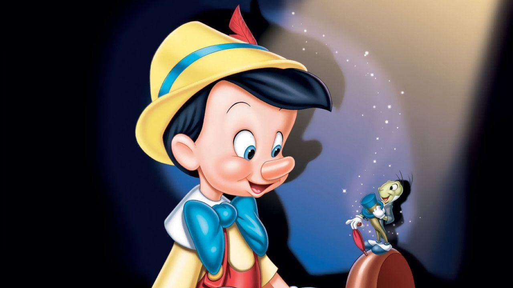

Introduction
History
Italy has a lot of interesting information. It's one of the most travelled to nations in Europe. The history is extensive. Rich cultural heritage. The meal is also delicious. What precisely do you know, though? Here are some fascinating Italian-related facts.
1. Italy Becomes a Unified Peninsula
In 1713, after the War of the Spanish Succession, Milan, Naples, and Sardinia were handed over to the Hapsburgs of Austria, which lost some of its Italian territories in 1735. After 1800, Italy was unified by Napoléon, who crowned himself king of Italy in 1805; but with the Congress of Vienna in 1815, Austria once again became the dominant power in a disunited Italy. Austrian armies crushed Italian uprisings in 1820–1821 and 1831. In the 1830s, Giuseppe Mazzini, a brilliant liberal nationalist, organized the Risorgimento (Resurrection), which laid the foundation for Italian unity. Disappointed Italian patriots looked to the House of Savoy for leadership. Count Camille di Cavour (1810–1861), prime minister of Sardinia in 1852 and the architect of a united Italy, joined England and France in the Crimean War (1853–1856), and in 1859 helped France in a war against Austria, thereby obtaining Lombardy. By plebiscite in 1860, Modena, Parma, Tuscany, and the Romagna voted to join Sardinia. In 1860, Giuseppe Garibaldi conquered Sicily and Naples and turned them over to Sardinia. Victor Emmanuel II, king of Sardinia, was proclaimed king of Italy in 1861. The annexation of Venetia in 1866 and of papal Rome in 1870 marked the complete unification of peninsular Italy into one nation under a constitutional monarchy.
2. Italy is one of Western Europe's youngest countries
Italy has one of Europe's longest histories, yet it's only been a country since 1861. In Roman times, Italy was a single entity. It then divided into a collection of sovereign states and remained that way until 1861.
3. Rome is over 2,000 years old
Rome was founded in 753 BC and the Roman Empire was born in 27 BC. The Empire ruled Europe and parts of North Africa right up until 395 AD. After the fall of the Empire, Italy divided into separate states until 1861. Italy's national day is called Festa della Repubblica and it's celebrated each year on 2 June.

4. Italy's flag is green, white and red
Italy's flag represents hope, faith and charity. Green is hope, white denotes faith and red is the colour of charity. Inspired by the French flag, it's often called Il Tricolore. Tricolore Day in Italy is 7 January. And it's celebrated on Reggio Emilia, at the very spot where the flag was first adopted in 1797.

5. Pinocchio was first published in an Italian newspaper
Carlo Collodi wrote the legendary story Pinocchio in 1880. It was originally serialised in the children's newspaper, Gioniale per i Bambini.

If you're interested in learning more about Italy's history, check out the video below!
Regions and Cities
Regions
| Aosta Valley | Lazioc | Sicily |
| Apulia | Liguria | Trentino-Alto Adige/Südtirol |
| Abruzzo | Friuli Venezia Giulia | Sardinia |
| Basilicata | Lombardy | Tuscany |
| Calabria | Marche | Umbria |
| Campania | Molise | Veneto |
| Emilia-Romagna | Piedmont | Italia |
Cities
- Rome
- Milan
- Naples
- Turin
- Palermo
- Geneo
- Bologna
- Florence
- Bari
- Catania
People & Language
People
According to the Italian National Institute of Statistics, Italy is home to approximately 59.6 million individuals as of 1 January 2020. Of the 59.6 million people living in Italy as of 1 January 2020, 48.7 percent are men, 51.3 percent are women. 13 percent are children aged up to 15, 63.8 percent are believed to be aged 15 – 64 and 23.2 percent are 65 or older. 14,804 are 100 years old or older. The largest percentage of the population, 26.8, lives in the North West of Italy. The largest city by population is Rome with over 2.8 million residents, while the smallest municipality is Morterone with a population of just 30 people.
Language
The official language of the country is Italian. About 93 percent of the Italian population speaks Italian as native language, according to the BBC. There are a number of dialects of the language spoken in the country, including Sardinian, Friulian, Neapolitan, Sicilian, Ligurian, Piedmontese, Venetian and Calabrian. Milanese is also spoken in Milan. Other languages spoken by native Italians include Albanian, Bavarian, Catalan, Cimbrian, Corsican, Croatian, French, German, Greek, Slovenian and Walser.
Climate
In general travelers to Italy should plan on hot, sunny summers; mildly cold winters with a lot of rain and little snowfall; and fall and spring seasons that can range from sunny and pleasant to rainy and chilly.